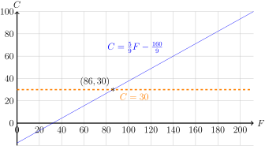
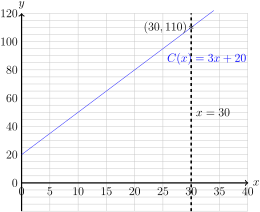

Section 1.4 Applications of Linear Functions
Up until this point, we've been treating linear functions as somewhat disembodied Mathematical entities. In this section, we'll give a few examples to show how they appear and are applied in practice.
Example 1.4.1.
The freezing point of water is \(0^\circ\) Celsius and \(32^\circ\) Fahrenheit. The boiling point of water is \(100^\circ\) Celsius and \(212^\circ\) Fahrenheit.
Find a linear function \(T(F)=C\) that converts Fahrenheit into Celsius.
When it's 10 degrees Fahrenheit, what is the temperature in Celsius?
When it's 30 degrees Celsius, what is the temperature in Fahrenheit?
We are given that \(T(32)=0\) and \(T(212)=100\text{.}\) This gives us points \((32,0)\) and \((212,100)\text{,}\) so this bears some similarity to Example 1.3.4.
-
We first identify the slope of the function:
\begin{equation*} m=\frac{\Delta C}{\Delta F}=\frac{100-0}{212-32}=\frac{100}{180}=\color{red}{\frac{5}{9}}\text{.} \end{equation*}Then choosing either point, say \(\color{blue}{(32,0)}\text{,}\) and point slope form, we have:
\begin{align*} C-C_0\amp = m(F-F_0)\\ C-\color{blue}{0}\amp = \color{red}{\frac{5}{9}}(F-\color{blue}{32})\\ C\amp = \frac{5}{9}F-\frac{160}{9}\text{.} \end{align*}Thus \(T(F)=\frac{5}{9}F-\frac{160}{9}\)

-
When it's 10 degrees, we have that \(\color{teal}{F=10}\) and so:
\begin{align*} C\amp = \frac{5}{9}F-\frac{160}{9}\\ C\amp = \frac{5}{9}\cdot\color{teal}{10}-\frac{160}{9}\\ C\amp = \frac{50}{9}-\frac{160}{9}\\ C\amp = -\frac{110}{9}\approx-12.2222\text{.} \end{align*}So 10 degrees Fahrenheit is \(-\frac{110}{9}\approx-12.2222\) degrees Celsius.
-
When it's 30 degrees Celsius i.e. \(\color{orange}{C=30}\) we have:
\begin{align*} C\amp = \frac{5}{9}F-\frac{160}{9}\\ \color{orange}{30}\amp = \frac{5}{9}F-\frac{160}{9}\\ 30+\frac{160}{9}\amp = \frac{5}{9}F\\ \frac{430}{9}\amp = \frac{5}{9}F\\ F\amp = \frac{430}{5}=86\text{.} \end{align*}So when it's 30 degrees Celsius, it is 86 degrees Fahrenheit.
Desmos representation here:
Example 1.4.2.
Suppose you were selling widgets for $5 a unit, they have a marginal cost of $3 per unit, and a fixed cost of production of $20.
Find the Cost, Revenue and Profit functions of producing \(x\) widgets (\(C(x), R(x), P(x)\)) in dollars.
For each widget sold, how much does your profit increase?
What is the cost of producing 30 widgets?
What is the break even point? (Zero profit).
-
We break these down one at a time.
The marginal cost or cost per widget is $3, and the cost for producing no widgets is the fixed cost of $20. Thus \(C(x)=3x+20\text{.}\)
You get $5 per widget sold, and clearly do not get any money for selling nothing, so \(R(x)=5x+0=5x\text{.}\)
Profit is Revenue (money generated) minus Costs (money spent). Thus \(P(x)=R(x)-C(x)=5x-(3x+20)=2x-20\text{.}\)
 Since \(P(x)=2x-20\text{,}\) the change per unit of \(x\) or profit per widget is the slope, or $2/widget.
-
When you produce \(\color{teal}{x=30}\) widgets, the cost will be:
\begin{align*} C(x)\amp = 3x+20\\ C(x)\amp = 3\cdot\color{teal}{30}+20\\ C(x)\amp = 90+20\\ C(x)\amp = 110\text{.} \end{align*}The cost of producing 30 widgets is $110.
-
The break even occurs when the profit is zero, \(\color{orange}{P(x)=0}\text{.}\)
\begin{align*} P(x)\amp = 2x-20\\ \color{orange}{0}\amp = 2x-20\\ 2x\amp = 20\\ x\amp = 10\text{.} \end{align*}The break even point occurs when \(x=10\) widgets are sold.

Example 1.4.3.
Question: Dr. Johnson is traveling to visit her mother for a holiday. She drives at a constant speed of 75 mph. After 3 hours, she passes a landmark that she knows is 200 miles from her mom's house.
Find a function \(D(t)\) that gives Dr. Johnson's distance to her mother house, in miles, after \(t\) hours.
How far away was she when she started driving?
How many hours did it take from start to finish to complete this drive?
-
Since she is driving towards her mom's house, the distance from her to the house decreases at a rate of 75 miles per hour. Thus \(\color{red}{m=-75}\text{.}\) At \(t=3\) hours, her distance was 200 miles away. Thus \(\color{blue}{(3,200)}\) falls on the line representing this function. Recall the techniques from Examples 1.3.2, Example 1.3.3.
\begin{align*} D(t)\amp = -75t+b\\ \color{blue}{200}\amp = \color{red}{-75}\cdot\color{blue}{3}+b\\ 200\amp = -225+b\\ b\amp = 200+225=425\text{.} \end{align*}Thus \(D(t)=-75t+425\text{.}\)
At the start of the journey, \(\color{teal}{t=0}\text{,}\) and so she was \(D(\color{teal}{0})=-75\cdot\color{teal}{0}+425=425\) miles from her mother's house.
-
When she arrives, her distance from her mothers house is \(\color{orange}{D(t)=0}\) miles and so:
\begin{align*} D(t)\amp = -75t+425\\ \color{orange}{0}\amp = -75t+425\\ 75t\amp = 425\\ t\amp = \frac{425}{75}\approx 5.6667\text{.} \end{align*}So the trip takes \(t=\frac{425}{75}\approx 5.6667\) hours or 5 hours and 40 minutes.
Example 1.4.4.
Question: Consider the following graphs of functions \(q=S(p), D(p)\text{,}\) where \(p\) is the price of a product, and \(q\) is the quantity demanded.
Find the equations for the supply and demand curves \(q=S(p), q=D(p)\text{,}\) where \(p\) is the price in dollars and \(q\) is the quantity, either demanded or supplied.
If $350 is charged for this product, What is the surplus or deficit of products produced?
Where is the equilibrium point (where supply and demand are the same)?
-
It helps if we can identify some points on these lines. We will work on them one at a time.
-
Graphically, we can see that \(S(0)=0\text{,}\) thus \((0,0)\) is on the supply line. This also tells us the \(q\)-intercept, \(b=0\text{.}\) We can also see that when \(p=400, S(400)=1200\text{,}\) thus \((400,1200)\) is also on this line. Thus:
\begin{equation*} m=\frac{1200-0}{400-0}=3\text{.} \end{equation*}So \(S(p)=3p\text{.}\)
-
Graphically, we can see that \(D(0)=5200\text{,}\) thus \((0,5200)\) is on the demand line. This also tells us the \(q\)-intercept, \(b=5200\text{.}\) We can also see that when \(p=400, D(400)=3200\text{,}\) thus \((400,3200)\) is also on this line. Thus:
\begin{equation*} m=\frac{3200-5200}{400-0}=\frac{-2000}{400}=-5\text{.} \end{equation*}So \(D(p)=-5p+5200\text{.}\)
-
When \(p=350\text{,}\) we will have \(S(350)=3*350=1050\) products supplied, but \(D(350)=-5*250+5200=3450\) demanded. Thus there is a deficit of \(3450-1050=2400\) products demanded that are not supplied, since demand exceeds supply.
-
The equilibrium point is the point where the quantity supplied and demanded are the same. Algebraically, this means \(D(p)=S(p)\text{,}\) and so:
\begin{align*} -5p+5200\amp = 3p\\ 5200\amp = 8p\\ p\amp = \frac{5200}{8}=650\text{.} \end{align*}So the equilibrium happens when \(p=650\) that is $650 per unit. Then, we note that \(S(650)=3*650=1950\) and \(D(p)=-5*650+5200=1950\text{,}\) so the equilibrium point is \((650, 1950)\) or \(\dollar650\) per unit, and 1950 units sold.
These examples barely scratch the surface on how linear functions may be applied, but hopefully they gave you some sense on what sort of things they can be used to model, what sort of questions one can answer with them, and how to address them when the time comes.